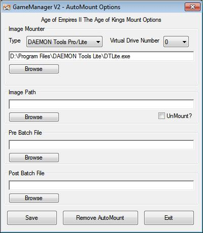

Function
The function of this program is to allow the user to set the image file to automatically mount and batch files to run before the selected game is run. Also to set the batch file to run after game finished and whether to unmount the image file
Interface

When
you click AutoMount from the Tools section of GameManager you should
be greeted with a window like above.
Image Mounter & Image Path
For this feature you must have either DAEMON
Tools, Alcohol 120 or
WinCDEmu installed.
Once
installed select which one you have from the drop down box next to
'Type', then click browse and navigate to the daemon, alcohol or
WinCDEmu folder and select DTLite.exe,
DTAgent.exe, AxCmd.exe, batchmnt.exe or batchmnt64.exe depending on
which mounter software you have installed. If you select the wrong
EXE it will give an error and you'll have to reselect a different
EXE. Once that is done you must select which Virtual Drive Number you
wish to mount to, do this using the drop down box.
Note:
AutoMount will not automatically add virtual drives, if you select #3
then you must have 4 virtual drives added via the
DAEMON/Alcohol/WinCDEmu program interface.
Next
simply click on 'Browse'
button under Image Path and select your image file. (most likely an
mds file if your running protected backups). If you would like the
image file unmounted after the game has finished click
'UnMount'.
Note:
UnMount only works when Silent Runner is enabled
Pre and Post Batch Files
If
you require batch files to be run before and/or after your games then
select them using the browse buttons under the respective
sections.
If you only want batch files to be run and not image
mounter then you must select 'Batch File ONLY' from the type menu
under Image Mounter
Note:
Post Batch Files only work when Silent Runner is enabled
Save
Click the 'Save' button and it will save the
settings and start the FrontEnd again.
If you don't want to save
settings click the 'Exit' button and all recent changes to 'Virtual
Drive Number' and 'Image Path' will be discarded.
Turn off AutoMount
If you want to turn off AutoMount for a certain game, select it in FrontEnd and click the 'Remove AutoMount' button